Task 5: Day 2 operation using CI Pipeline
We will implement CI/CD pipeline for day 2 operation tasks in this section. GitLab and GitLab runner will be used for this purpose
- GitLab is software development platform that incorporates multiple capabilities including Version Control, code review and CI/CD in single system
- GitLab runner is an application that run tests & results i.e., jobs in a pipeline and then send the results to GitLab
- The cloud hosted GitLab is used in this lab, while the GitLab runner will be installed on the same local server which is used as Ansible host in this lab setup
The process for creating a CI/CD pipeline with GitLab & GitLab runner include below procedure:
- Create a project in GitLab
- Install and register the GitLab Runner for your project
- Define a CI/CD job (steps, tests) in a file named
.gitlab-ci.ymlin the root of the repository - Conditions/rules can be defined in
.gitlab-ci.ymlfile (YAML syntax) that will perform a job and display the results in GitLab pipeline e.g. When a commit to repository is done then the runner may execute the job and display the results in GitLab pipeline
In this section, CI/CD pipeline for day 2 operation tasks will be implemented. Below steps will be done:
- Create an Ansible playbook to verify underlay and overlay
- Version control for the EVPN Ansible playbooks using GitLab version control capabilities
- Create CI pipeline using GitLab
- Add new VNIs into existing fabric
- Verify CI pipeline in test and staging stages
- Commit the merger and verify CI Pipeline in production stage
Step 1: Playbook to verify underlay and overlay
In this step, you will create the playbook to verify underlay and overlay operation. The playbook will be applied to all leaf switches to verify the below commands:
Underlay
- show ip ospf neighbor
- show ip bgp sum
- show ip pim neighbor
Overlay
- show nve vni
- show nve peer
- show ip route vrf Tenant-1
- show bgp l2vpn evpn
- show l2route evpn mac-ip all
- Switch to Atom. On the left page right click on the folder
EVPN-Ansibleand create a new playbook namedverify_fabric.yml. Enter this file name and hit enter. Then Copy and Paste the below content to this newly created file:
---
- hosts: leaf, jinja2_leaf
connection: local
gather_facts: false
tasks:
- name: verify underlay
register: underlay_output
cisco.nxos.nxos_command:
commands:
- show ip ospf neighbors
- show ip bgp sum
- show ip pim neighbor
tags: underlay
- debug: var=underlay_output.stdout_lines
tags: underlay
- set_fact:
savefile: "{{underlay_output.stdout_lines | to_nice_yaml}}"
- local_action: copy content="{{savefile}}" dest=./underlay.txt
- name: Verify Overlay
register: overlay_output
cisco.nxos.nxos_command:
commands:
- show nve vni
- show nve peer
- show ip route vrf Tenant-1
- show bgp l2vpn evpn
- show l2route evpn mac-ip all
tags: overlay
- debug: var=overlay_output.stdout_lines
tags: overlay
- set_fact:
savefile: "{{overlay_output.stdout_lines | to_nice_yaml}}"
- local_action: copy content="{{savefile}}" dest=./overlay.txt
-
Click
FileandSaveon Atom. This will save the playbook, and also scp the playbook to Ansible server using pre-configured “remote-sync” package. -
On the Ansible node (via MTPuTTy), run verify_fabric.yml playbook and verify the output for underlay by executing below command (using respective tag). This command will show ospf, bgp and pim neighbors for all leaf switches:
cd ~/EVPN-Ansible
ansible-playbook verify_fabric.yml --tags "underlay"
-
Below screenshot shows the partial output of above command and shows ospf, bgp and pim neighbors for all leaf switches:

Here is complete log of execution of above playbook/command:
root@ubuntu:~/EVPN-Ansible# ansible-playbook verify_fabric.yml --tags "underlay"
PLAY [leaf, jinja2_leaf] *********************************************************************************************************************************************************************************************
TASK [verify underlay] ***********************************************************************************************************************************************************************************************
ok: [198.18.4.101]
ok: [198.18.4.104]
ok: [198.18.4.103]
TASK [debug] *********************************************************************************************************************************************************************************************************
ok: [198.18.4.101] => {
"underlay_output.stdout_lines": [
[
"OSPF Process ID 1 VRF default",
" Total number of neighbors: 2",
" Neighbor ID Pri State Up Time Address Interface",
" 192.168.0.6 1 FULL/ - 01:27:12 10.0.0.21 Eth1/1 ",
" 192.168.0.7 1 FULL/ - 01:27:12 10.0.128.5 Eth1/2"
],
[
"BGP summary information for VRF default, address family IPv4 Unicast",
"BGP router identifier 192.168.0.8, local AS number 65000",
"BGP table version is 6, IPv4 Unicast config peers 2, capable peers 2",
"0 network entries and 0 paths using 0 bytes of memory",
"BGP attribute entries [0/0], BGP AS path entries [0/0]",
"BGP community entries [0/0], BGP clusterlist entries [4/16]",
"",
"Neighbor V AS MsgRcvd MsgSent TblVer InQ OutQ Up/Down State/PfxRcd",
"192.168.0.6 4 65000 161 106 6 0 0 01:23:17 0 ",
"192.168.0.7 4 65000 161 106 6 0 0 01:23:15 0"
],
[
"PIM Neighbor Status for VRF \"default\"",
"Neighbor Interface Uptime Expires DR Bidir- BFD ECMP Redirect",
" Priority Capable State Capable",
"10.0.0.21 Ethernet1/1 01:23:08 00:01:35 1 yes n/a no",
"10.0.128.5 Ethernet1/2 01:23:07 00:01:31 1 yes n/a no"
]
]
}
ok: [198.18.4.104] => {
"underlay_output.stdout_lines": [
[
"OSPF Process ID 1 VRF default",
" Total number of neighbors: 2",
" Neighbor ID Pri State Up Time Address Interface",
" 192.168.0.6 1 FULL/ - 1d04h 10.0.128.1 Eth1/1 ",
" 192.168.0.7 1 FULL/ - 1d04h 10.0.128.17 Eth1/2"
],
[
"BGP summary information for VRF default, address family IPv4 Unicast",
"BGP router identifier 192.168.0.11, local AS number 65000",
"BGP table version is 5, IPv4 Unicast config peers 2, capable peers 2",
"0 network entries and 0 paths using 0 bytes of memory",
"BGP attribute entries [0/0], BGP AS path entries [0/0]",
"BGP community entries [0/0], BGP clusterlist entries [4/16]",
"",
"Neighbor V AS MsgRcvd MsgSent TblVer InQ OutQ Up/Down State/PfxRcd",
"192.168.0.6 4 65000 672 662 5 0 0 07:03:12 0 ",
"192.168.0.7 4 65000 1441 1433 5 0 0 22:36:01 0"
],
[
"PIM Neighbor Status for VRF \"default\"",
"Neighbor Interface Uptime Expires DR Bidir- BFD ECMP Redirect",
" Priority Capable State Capable",
"10.0.128.1 Ethernet1/1 08:51:43 00:01:28 1 yes n/a no",
"10.0.128.17 Ethernet1/2 22:36:23 00:01:23 1 yes n/a no"
]
]
}
ok: [198.18.4.103] => {
"underlay_output.stdout_lines": [
[
"OSPF Process ID 1 VRF default",
" Total number of neighbors: 2",
" Neighbor ID Pri State Up Time Address Interface",
" 192.168.0.6 1 FULL/ - 01:27:11 10.0.0.29 Eth1/1 ",
" 192.168.0.7 1 FULL/ - 01:27:10 10.0.128.13 Eth1/2"
],
[
"BGP summary information for VRF default, address family IPv4 Unicast",
"BGP router identifier 192.168.0.10, local AS number 65000",
"BGP table version is 6, IPv4 Unicast config peers 2, capable peers 2",
"0 network entries and 0 paths using 0 bytes of memory",
"BGP attribute entries [0/0], BGP AS path entries [0/0]",
"BGP community entries [0/0], BGP clusterlist entries [4/16]",
"",
"Neighbor V AS MsgRcvd MsgSent TblVer InQ OutQ Up/Down State/PfxRcd",
"192.168.0.6 4 65000 148 107 6 0 0 01:23:17 0 ",
"192.168.0.7 4 65000 150 107 6 0 0 01:23:17 0"
],
[
"PIM Neighbor Status for VRF \"default\"",
"Neighbor Interface Uptime Expires DR Bidir- BFD ECMP Redirect",
" Priority Capable State Capable",
"10.0.0.29 Ethernet1/1 01:23:09 00:01:37 1 yes n/a no",
"10.0.128.13 Ethernet1/2 01:23:08 00:01:23 1 yes n/a no"
]
]
}
PLAY RECAP ***********************************************************************************************************************************************************************************************************
198.18.4.101 : ok=2 changed=0 unreachable=0 failed=0 skipped=0 rescued=0 ignored=0
198.18.4.103 : ok=2 changed=0 unreachable=0 failed=0 skipped=0 rescued=0 ignored=0
198.18.4.104 : ok=2 changed=0 unreachable=0 failed=0 skipped=0 rescued=0 ignored=0
Next:
- On the Ansible node (via MTPutty), execute the verify_fabric.yml playbook by issuing below command. As per below, this command uses the
--tagsin the syntax to execute the respective tasks (as per the tag) in the playbook. As per the output, verify the overlay outputs (as shown below). Note: This command will show the nve tunnel peer, host route in BGP EVPN from all leaf switches:
ansible-playbook verify_fabric.yml --tags "overlay"
-
Below screenshot of the partial output of above command:
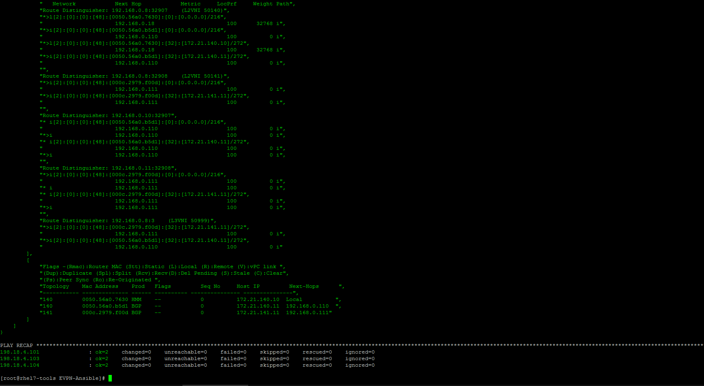
-
Below shows the complete log output of execution of above playbook command. Verify the output for vne vni status, vne dynamic neighbors, mac-ip evpn route update for each L2VNI, l2fib etc. information:
root@ubuntu:~/EVPN-Ansible# ansible-playbook verify_fabric.yml --tags "overlay"
PLAY [leaf, jinja2_leaf] *********************************************************************************************************************************************************************************************
TASK [Verify Overlay] ************************************************************************************************************************************************************************************************
ok: [198.18.4.104]
ok: [198.18.4.103]
ok: [198.18.4.101]
TASK [debug] *********************************************************************************************************************************************************************************************************
ok: [198.18.4.104] => {
"overlay_output.stdout_lines": [
[
"Codes: CP - Control Plane DP - Data Plane ",
" UC - Unconfigured SA - Suppress ARP ",
" SU - Suppress Unknown Unicast",
" ",
"Interface VNI Multicast-group State Mode Type [BD/VRF] Flags",
"--------- -------- ----------------- ----- ---- ------------------ -----",
"nve1 50140 239.0.0.140 Up CP L2 [140] ",
"nve1 50141 239.0.0.141 Up CP L2 [141] ",
"nve1 50999 n/a Up CP L3 [Tenant-1]"
],
[
"Interface Peer-IP State LearnType Uptime Router-Mac ",
"--------- --------------- ----- --------- -------- -----------------",
"nve1 192.168.0.18 Up CP 01:07:55 000c.2997.621c ",
"nve1 192.168.0.110 Up CP 01:23:17 000c.2939.f53f"
],
[
"IP Route Table for VRF \"Tenant-1\"",
"'*' denotes best ucast next-hop",
"'**' denotes best mcast next-hop",
"'[x/y]' denotes [preference/metric]",
"'%<string>' in via output denotes VRF <string>",
"",
"172.21.140.0/24, ubest/mbest: 1/0, attached",
" *via 172.21.140.1, Vlan140, [0/0], 22:39:01, direct",
"172.21.140.1/32, ubest/mbest: 1/0, attached",
" *via 172.21.140.1, Vlan140, [0/0], 22:39:01, local",
"172.21.140.10/32, ubest/mbest: 1/0",
" *via 192.168.0.18%default, [200/0], 01:07:52, bgp-65000, internal, tag 65000 (evpn) segid: 50999 tunnelid: 0xc0a80012 encap: VXLAN",
" ",
"172.21.140.11/32, ubest/mbest: 1/0",
" *via 192.168.0.110%default, [200/0], 01:23:18, bgp-65000, internal, tag 65000 (evpn) segid: 50999 tunnelid: 0xc0a8006e encap: VXLAN",
" ",
"172.21.141.0/24, ubest/mbest: 1/0, attached",
" *via 172.21.141.1, Vlan141, [0/0], 22:38:59, direct",
"172.21.141.1/32, ubest/mbest: 1/0, attached",
" *via 172.21.141.1, Vlan141, [0/0], 22:38:59, local",
"172.21.141.11/32, ubest/mbest: 1/0, attached",
" *via 172.21.141.11, Vlan141, [190/0], 07:04:08, hmm"
],
[
"BGP routing table information for VRF default, address family L2VPN EVPN",
"BGP table version is 458, Local Router ID is 192.168.0.11",
"Status: s-suppressed, x-deleted, S-stale, d-dampened, h-history, *-valid, >-best",
"Path type: i-internal, e-external, c-confed, l-local, a-aggregate, r-redist, I-injected",
"Origin codes: i - IGP, e - EGP, ? - incomplete, | - multipath, & - backup",
"",
" Network Next Hop Metric LocPrf Weight Path",
"Route Distinguisher: 192.168.0.8:32907",
"*>i[2]:[0]:[0]:[48]:[0050.56a0.7630]:[0]:[0.0.0.0]/216",
" 192.168.0.18 100 0 i",
"* i 192.168.0.18 100 0 i",
"*>i[2]:[0]:[0]:[48]:[0050.56a0.7630]:[32]:[172.21.140.10]/272",
" 192.168.0.18 100 0 i",
"* i 192.168.0.18 100 0 i",
"",
"Route Distinguisher: 192.168.0.10:32907",
"* i[2]:[0]:[0]:[48]:[0050.56a0.b5d1]:[0]:[0.0.0.0]/216",
" 192.168.0.110 100 0 i",
"*>i 192.168.0.110 100 0 i",
"*>i[2]:[0]:[0]:[48]:[0050.56a0.b5d1]:[32]:[172.21.140.11]/272",
" 192.168.0.110 100 0 i",
"* i 192.168.0.110 100 0 i",
"",
"Route Distinguisher: 192.168.0.11:32907 (L2VNI 50140)",
"*>i[2]:[0]:[0]:[48]:[0050.56a0.7630]:[0]:[0.0.0.0]/216",
" 192.168.0.18 100 0 i",
"*>i[2]:[0]:[0]:[48]:[0050.56a0.b5d1]:[0]:[0.0.0.0]/216",
" 192.168.0.110 100 0 i",
"*>i[2]:[0]:[0]:[48]:[0050.56a0.7630]:[32]:[172.21.140.10]/272",
" 192.168.0.18 100 0 i",
"*>i[2]:[0]:[0]:[48]:[0050.56a0.b5d1]:[32]:[172.21.140.11]/272",
" 192.168.0.110 100 0 i",
"",
"Route Distinguisher: 192.168.0.11:32908 (L2VNI 50141)",
"*>l[2]:[0]:[0]:[48]:[000c.2979.f00d]:[0]:[0.0.0.0]/216",
" 192.168.0.111 100 32768 i",
"*>l[2]:[0]:[0]:[48]:[000c.2979.f00d]:[32]:[172.21.141.11]/272",
" 192.168.0.111 100 32768 i",
"",
"Route Distinguisher: 192.168.0.11:3 (L3VNI 50999)",
"*>i[2]:[0]:[0]:[48]:[0050.56a0.7630]:[32]:[172.21.140.10]/272",
" 192.168.0.18 100 0 i",
"*>i[2]:[0]:[0]:[48]:[0050.56a0.b5d1]:[32]:[172.21.140.11]/272",
" 192.168.0.110 100 0 i"
],
[
"Flags -(Rmac):Router MAC (Stt):Static (L):Local (R):Remote (V):vPC link ",
"(Dup):Duplicate (Spl):Split (Rcv):Recv(D):Del Pending (S):Stale (C):Clear",
"(Ps):Peer Sync (Ro):Re-Originated ",
"Topology Mac Address Prod Flags Seq No Host IP Next-Hops ",
"----------- -------------- ------ ---------- --------------- ---------------",
"140 0050.56a0.7630 BGP -- 0 172.21.140.10 192.168.0.18 ",
"140 0050.56a0.b5d1 BGP -- 0 172.21.140.11 192.168.0.110 ",
"141 000c.2979.f00d HMM -- 0 172.21.141.11 Local"
]
]
}
ok: [198.18.4.103] => {
"overlay_output.stdout_lines": [
[
"Codes: CP - Control Plane DP - Data Plane ",
" UC - Unconfigured SA - Suppress ARP ",
" SU - Suppress Unknown Unicast",
" ",
"Interface VNI Multicast-group State Mode Type [BD/VRF] Flags",
"--------- -------- ----------------- ----- ---- ------------------ -----",
"nve1 50140 239.0.0.140 Up CP L2 [140] ",
"nve1 50141 239.0.0.141 Up CP L2 [141] ",
"nve1 50999 n/a Up CP L3 [Tenant-1]"
],
[
"Interface Peer-IP State LearnType Uptime Router-Mac ",
"--------- --------------- ----- --------- -------- -----------------",
"nve1 192.168.0.18 Up CP 01:07:55 000c.2997.621c ",
"nve1 192.168.0.111 Up CP 01:23:20 000c.2951.176f"
],
[
"IP Route Table for VRF \"Tenant-1\"",
"'*' denotes best ucast next-hop",
"'**' denotes best mcast next-hop",
"'[x/y]' denotes [preference/metric]",
"'%<string>' in via output denotes VRF <string>",
"",
"172.21.140.0/24, ubest/mbest: 1/0, attached",
" *via 172.21.140.1, Vlan140, [0/0], 01:24:28, direct",
"172.21.140.1/32, ubest/mbest: 1/0, attached",
" *via 172.21.140.1, Vlan140, [0/0], 01:24:28, local",
"172.21.140.10/32, ubest/mbest: 1/0",
" *via 192.168.0.18%default, [200/0], 01:07:53, bgp-65000, internal, tag 65000 (evpn) segid: 50999 tunnelid: 0xc0a80012 encap: VXLAN",
" ",
"172.21.140.11/32, ubest/mbest: 1/0, attached",
" *via 172.21.140.11, Vlan140, [190/0], 01:23:18, hmm",
"172.21.141.0/24, ubest/mbest: 1/0, attached",
" *via 172.21.141.1, Vlan141, [0/0], 01:24:25, direct",
"172.21.141.1/32, ubest/mbest: 1/0, attached",
" *via 172.21.141.1, Vlan141, [0/0], 01:24:25, local",
"172.21.141.11/32, ubest/mbest: 1/0",
" *via 192.168.0.111%default, [200/0], 01:23:20, bgp-65000, internal, tag 65000 (evpn) segid: 50999 tunnelid: 0xc0a8006f encap: VXLAN"
],
[
"BGP routing table information for VRF default, address family L2VPN EVPN",
"BGP table version is 195, Local Router ID is 192.168.0.10",
"Status: s-suppressed, x-deleted, S-stale, d-dampened, h-history, *-valid, >-best",
"Path type: i-internal, e-external, c-confed, l-local, a-aggregate, r-redist, I-injected",
"Origin codes: i - IGP, e - EGP, ? - incomplete, | - multipath, & - backup",
"",
" Network Next Hop Metric LocPrf Weight Path",
"Route Distinguisher: 192.168.0.8:32907",
"* i[2]:[0]:[0]:[48]:[0050.56a0.7630]:[0]:[0.0.0.0]/216",
" 192.168.0.18 100 0 i",
"*>i 192.168.0.18 100 0 i",
"* i[2]:[0]:[0]:[48]:[0050.56a0.7630]:[32]:[172.21.140.10]/272",
" 192.168.0.18 100 0 i",
"*>i 192.168.0.18 100 0 i",
"",
"Route Distinguisher: 192.168.0.10:32907 (L2VNI 50140)",
"*>i[2]:[0]:[0]:[48]:[0050.56a0.7630]:[0]:[0.0.0.0]/216",
" 192.168.0.18 100 0 i",
"*>l[2]:[0]:[0]:[48]:[0050.56a0.b5d1]:[0]:[0.0.0.0]/216",
" 192.168.0.110 100 32768 i",
"*>i[2]:[0]:[0]:[48]:[0050.56a0.7630]:[32]:[172.21.140.10]/272",
" 192.168.0.18 100 0 i",
"*>l[2]:[0]:[0]:[48]:[0050.56a0.b5d1]:[32]:[172.21.140.11]/272",
" 192.168.0.110 100 32768 i",
"",
"Route Distinguisher: 192.168.0.10:32908 (L2VNI 50141)",
"*>i[2]:[0]:[0]:[48]:[000c.2979.f00d]:[0]:[0.0.0.0]/216",
" 192.168.0.111 100 0 i",
"*>i[2]:[0]:[0]:[48]:[000c.2979.f00d]:[32]:[172.21.141.11]/272",
" 192.168.0.111 100 0 i",
"",
"Route Distinguisher: 192.168.0.11:32908",
"* i[2]:[0]:[0]:[48]:[000c.2979.f00d]:[0]:[0.0.0.0]/216",
" 192.168.0.111 100 0 i",
"*>i 192.168.0.111 100 0 i",
"* i[2]:[0]:[0]:[48]:[000c.2979.f00d]:[32]:[172.21.141.11]/272",
" 192.168.0.111 100 0 i",
"*>i 192.168.0.111 100 0 i",
"",
"Route Distinguisher: 192.168.0.10:3 (L3VNI 50999)",
"*>i[2]:[0]:[0]:[48]:[000c.2979.f00d]:[32]:[172.21.141.11]/272",
" 192.168.0.111 100 0 i",
"*>i[2]:[0]:[0]:[48]:[0050.56a0.7630]:[32]:[172.21.140.10]/272",
" 192.168.0.18 100 0 i"
],
[
"Flags -(Rmac):Router MAC (Stt):Static (L):Local (R):Remote (V):vPC link ",
"(Dup):Duplicate (Spl):Split (Rcv):Recv(D):Del Pending (S):Stale (C):Clear",
"(Ps):Peer Sync (Ro):Re-Originated ",
"Topology Mac Address Prod Flags Seq No Host IP Next-Hops ",
"----------- -------------- ------ ---------- --------------- ---------------",
"140 0050.56a0.7630 BGP -- 0 172.21.140.10 192.168.0.18 ",
"140 0050.56a0.b5d1 HMM -- 0 172.21.140.11 Local ",
"141 000c.2979.f00d BGP -- 0 172.21.141.11 192.168.0.111"
]
]
}
ok: [198.18.4.101] => {
"overlay_output.stdout_lines": [
[
"Codes: CP - Control Plane DP - Data Plane ",
" UC - Unconfigured SA - Suppress ARP ",
" SU - Suppress Unknown Unicast",
" ",
"Interface VNI Multicast-group State Mode Type [BD/VRF] Flags",
"--------- -------- ----------------- ----- ---- ------------------ -----",
"nve1 50140 239.0.0.140 Up CP L2 [140] ",
"nve1 50141 239.0.0.141 Up CP L2 [141] ",
"nve1 50999 n/a Up CP L3 [Tenant-1]"
],
[
"Interface Peer-IP State LearnType Uptime Router-Mac ",
"--------- --------------- ----- --------- -------- -----------------",
"nve1 192.168.0.110 Up CP 01:07:59 000c.2939.f53f ",
"nve1 192.168.0.111 Up CP 01:07:59 000c.2951.176f"
],
[
"IP Route Table for VRF \"Tenant-1\"",
"'*' denotes best ucast next-hop",
"'**' denotes best mcast next-hop",
"'[x/y]' denotes [preference/metric]",
"'%<string>' in via output denotes VRF <string>",
"",
"172.21.140.0/24, ubest/mbest: 1/0, attached",
" *via 172.21.140.1, Vlan140, [0/0], 01:24:29, direct",
"172.21.140.1/32, ubest/mbest: 1/0, attached",
" *via 172.21.140.1, Vlan140, [0/0], 01:24:29, local",
"172.21.140.10/32, ubest/mbest: 1/0, attached",
" *via 172.21.140.10, Vlan140, [190/0], 01:24:18, hmm",
"172.21.140.11/32, ubest/mbest: 1/0",
" *via 192.168.0.110%default, [200/0], 01:07:51, bgp-65000, internal, tag 65000 (evpn) segid: 50999 tunnelid: 0xc0a8006e encap: VXLAN",
" ",
"172.21.141.0/24, ubest/mbest: 1/0, attached",
" *via 172.21.141.1, Vlan141, [0/0], 01:24:25, direct",
"172.21.141.1/32, ubest/mbest: 1/0, attached",
" *via 172.21.141.1, Vlan141, [0/0], 01:24:25, local",
"172.21.141.11/32, ubest/mbest: 1/0",
" *via 192.168.0.111%default, [200/0], 01:07:51, bgp-65000, internal, tag 65000 (evpn) segid: 50999 tunnelid: 0xc0a8006f encap: VXLAN"
],
[
"BGP routing table information for VRF default, address family L2VPN EVPN",
"BGP table version is 210, Local Router ID is 192.168.0.8",
"Status: s-suppressed, x-deleted, S-stale, d-dampened, h-history, *-valid, >-best",
"Path type: i-internal, e-external, c-confed, l-local, a-aggregate, r-redist, I-injected",
"Origin codes: i - IGP, e - EGP, ? - incomplete, | - multipath, & - backup",
"",
" Network Next Hop Metric LocPrf Weight Path",
"Route Distinguisher: 192.168.0.8:32907 (L2VNI 50140)",
"*>l[2]:[0]:[0]:[48]:[0050.56a0.7630]:[0]:[0.0.0.0]/216",
" 192.168.0.18 100 32768 i",
"*>i[2]:[0]:[0]:[48]:[0050.56a0.b5d1]:[0]:[0.0.0.0]/216",
" 192.168.0.110 100 0 i",
"*>l[2]:[0]:[0]:[48]:[0050.56a0.7630]:[32]:[172.21.140.10]/272",
" 192.168.0.18 100 32768 i",
"*>i[2]:[0]:[0]:[48]:[0050.56a0.b5d1]:[32]:[172.21.140.11]/272",
" 192.168.0.110 100 0 i",
"",
"Route Distinguisher: 192.168.0.8:32908 (L2VNI 50141)",
"*>i[2]:[0]:[0]:[48]:[000c.2979.f00d]:[0]:[0.0.0.0]/216",
" 192.168.0.111 100 0 i",
"*>i[2]:[0]:[0]:[48]:[000c.2979.f00d]:[32]:[172.21.141.11]/272",
" 192.168.0.111 100 0 i",
"",
"Route Distinguisher: 192.168.0.10:32907",
"* i[2]:[0]:[0]:[48]:[0050.56a0.b5d1]:[0]:[0.0.0.0]/216",
" 192.168.0.110 100 0 i",
"*>i 192.168.0.110 100 0 i",
"* i[2]:[0]:[0]:[48]:[0050.56a0.b5d1]:[32]:[172.21.140.11]/272",
" 192.168.0.110 100 0 i",
"*>i 192.168.0.110 100 0 i",
"",
"Route Distinguisher: 192.168.0.11:32908",
"*>i[2]:[0]:[0]:[48]:[000c.2979.f00d]:[0]:[0.0.0.0]/216",
" 192.168.0.111 100 0 i",
"* i 192.168.0.111 100 0 i",
"* i[2]:[0]:[0]:[48]:[000c.2979.f00d]:[32]:[172.21.141.11]/272",
" 192.168.0.111 100 0 i",
"*>i 192.168.0.111 100 0 i",
"",
"Route Distinguisher: 192.168.0.8:3 (L3VNI 50999)",
"*>i[2]:[0]:[0]:[48]:[000c.2979.f00d]:[32]:[172.21.141.11]/272",
" 192.168.0.111 100 0 i",
"*>i[2]:[0]:[0]:[48]:[0050.56a0.b5d1]:[32]:[172.21.140.11]/272",
" 192.168.0.110 100 0 i"
],
[
"Flags -(Rmac):Router MAC (Stt):Static (L):Local (R):Remote (V):vPC link ",
"(Dup):Duplicate (Spl):Split (Rcv):Recv(D):Del Pending (S):Stale (C):Clear",
"(Ps):Peer Sync (Ro):Re-Originated ",
"Topology Mac Address Prod Flags Seq No Host IP Next-Hops ",
"----------- -------------- ------ ---------- --------------- ---------------",
"140 0050.56a0.7630 HMM -- 0 172.21.140.10 Local ",
"140 0050.56a0.b5d1 BGP -- 0 172.21.140.11 192.168.0.110 ",
"141 000c.2979.f00d BGP -- 0 172.21.141.11 192.168.0.111"
]
]
}
PLAY RECAP ***********************************************************************************************************************************************************************************************************
198.18.4.101 : ok=2 changed=0 unreachable=0 failed=0 skipped=0 rescued=0 ignored=0
198.18.4.103 : ok=2 changed=0 unreachable=0 failed=0 skipped=0 rescued=0 ignored=0
198.18.4.104 : ok=2 changed=0 unreachable=0 failed=0 skipped=0 rescued=0 ignored=0
root@ubuntu:~/EVPN-Ansible#
Step 2: Install git and gitlab runner
In this section you will install git and gitlab runner on Anisble node.
- On the Ansible node (in MTPuTTy SSH session), run the below package installation command to install git:
cd ~/EVPN-Ansible
apt-get install git
Below screenshot shows the execution of the command

- On the Ansible node (in MTPuTTy SSH session), run the below
curlcommand to download and run a shell script that adds the official GitLab repository required for runner installation:
curl -L https://packages.gitlab.com/install/repositories/runner/gitlab-runner/script.deb.sh | sudo bash
Below screenshot shows the execution of the command

- On the Ansible node (in MTPuTTy SSH session), run the below command to install
gitlab-runner
apt-get install gitlab-runner
Below screenshot shows the output of above command:
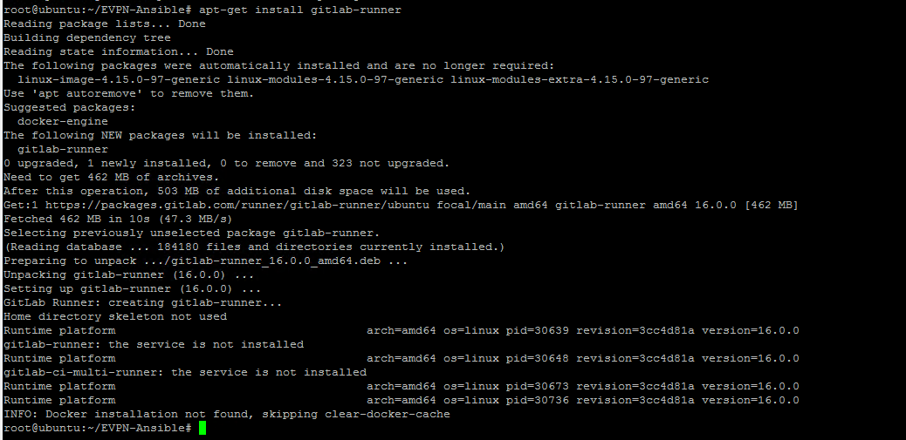
Step 3: Version control playbooks
In this step, you will use Gitlab to set version control for the playbooks.
-
Open chrome browser and enter gitlab.com/users/sign_in in the address bar. Sign in with Username:
lab.ciscolive@gmail.comPassword:#####as shown below.
-
After sign in to lab.ciscolive gitlab account, click New project on the top right to build a new project as shown below:

-
Select Create project to create a blank project with your assigned
POD_{ID}. Note: In the below screenshot:-
POD_1 is shown as an example - you must replace the
{ID}with your respective pod number. Find your assigned POD ID from table in task1. -
On this page, Select the Visibility Level to
Private - On this page, Click the
checkboxtoInitialize repository with a README

-
-
On the project page, copy the project url from Clone with HTTPS as shown below. The project url will be used in next step. The project url looks like https://gitlab.com/lab.ciscolive/pod_{ID}.git.
Note
You must replace {ID} with your respective pod number.
The screenshot below uses POD_1 as example.

- By default the main branch is protected branch. In order to add and commit files from git command, the branch settings need to be changed to unprotected. This change is done by cl the main branch to unprotected from project from the left pane Select Settings > Repository and then on right pane Click Protected branches > unprotect as shown in below screenshot:
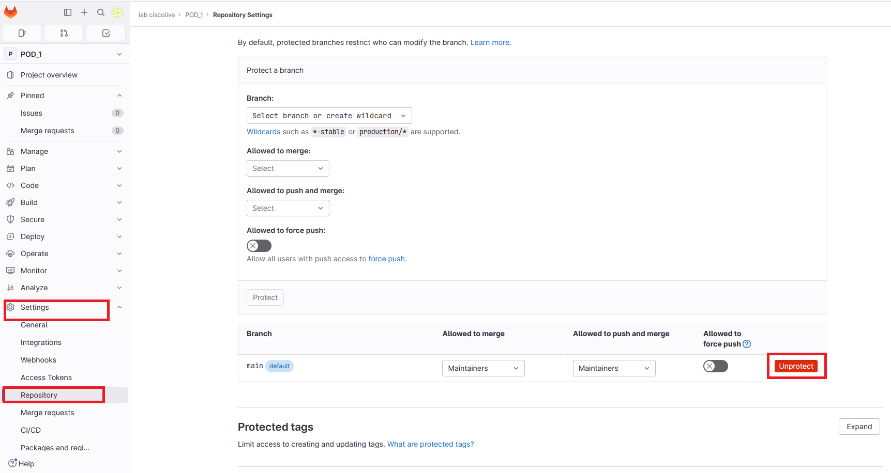
- On the Ansible node (in MTputty SSH session), run the below commands to initialize git in appropriate directory:
cd ~/EVPN-Ansible
git init
Below screenshot shows the execution of the initialize commands in correct directory:

- On the Ansible node, run following commands to add the remote repository as origin and verify it's result:
git remote add origin https://gitlab.com/lab.ciscolive/pod_{ID}.git
git remote -v
Below screenshot shows the execution of the above commands:

- Then to add all the files (Ansible playbooks, roles etc) to the staging area and check the status by using below commands:
git add .
git status
Below screenshot shows the execution of the above commands:
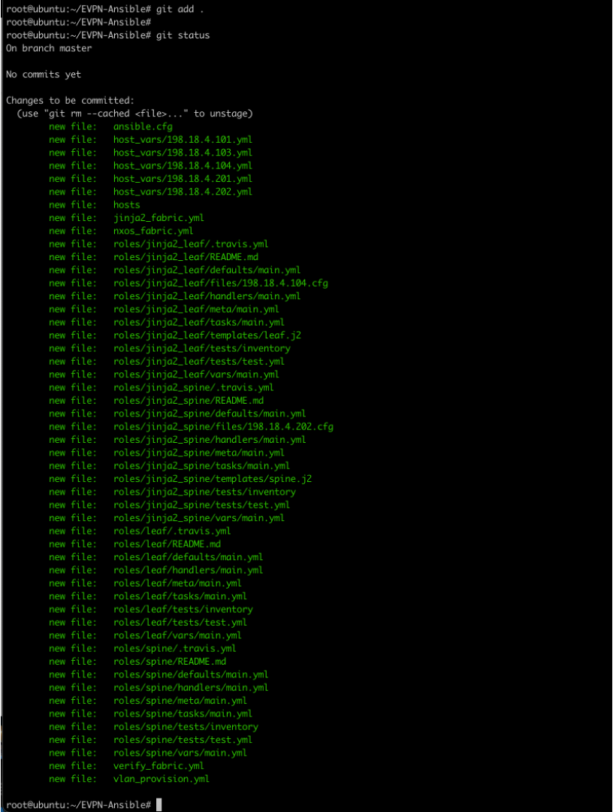
- Next, commit and push all files to main branch with below commands. When prompted for credentials, enter the Username:
lab.ciscolivePassword:#####
git checkout -b main
git commit -m "initial commit"
git push -f origin main
Below screenshot shows partial outputs of the commands:
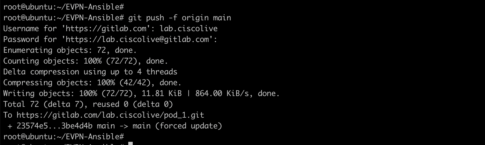
Step 4: Add CI pipeline file
In this step, you will create CI pepeline file for gitlab. Gitlab uses a special file named .gitlab-ci.yml for CI/CD configuration.
Note
The file name starts with . and it's not a mistake.
The file needs to be placed in root of the repository. Inside the file, you will define:
-
The stages you want run in the pipeline
-
The scripts you want run in each stage
-
The runner you want use for each script
-
How is the runner triggered for each script
Pipeline file can be added from GitLab UI using pipeline file editor, or from local and push to GitLab repo using git commands. We will use Atom to add pipeline file in this lab.
-
Switch to "Atom" application on your remote desktop. Right click on the folder EVPN-Ansible and Click New File to create a new file named .gitlab-ci.yml
-
In the
.gitlab-ci.ymlfile enter the contents shown below:
stages:
- test
- staging
- production
verify:
stage: test
tags:
- EVPN
script:
- ansible-playbook jinja2_fabric.yml --check
rules:
- if: '$CI_PIPELINE_SOURCE == "push" && $CI_COMMIT_BRANCH != "main"'
staging:
stage: staging
tags:
- EVPN
script:
- ansible-playbook jinja2_fabric.yml
- ansible-playbook nxos_fabric.yml
- ansible-playbook verify_fabric.yml
artifacts:
paths:
- overlay.txt
- underlay.txt
rules:
- if: '$CI_PIPELINE_SOURCE == "push" && $CI_COMMIT_BRANCH != "main"'
deploy:
stage: production
tags:
- EVPN
script:
- ansible-playbook jinja2_fabric.yml
- ansible-playbook nxos_fabric.yml
rules:
- if: '$CI_PIPELINE_SOURCE == "merge_request_event"'
when: manual
Below screenshot shows the file after added above contents on Atom
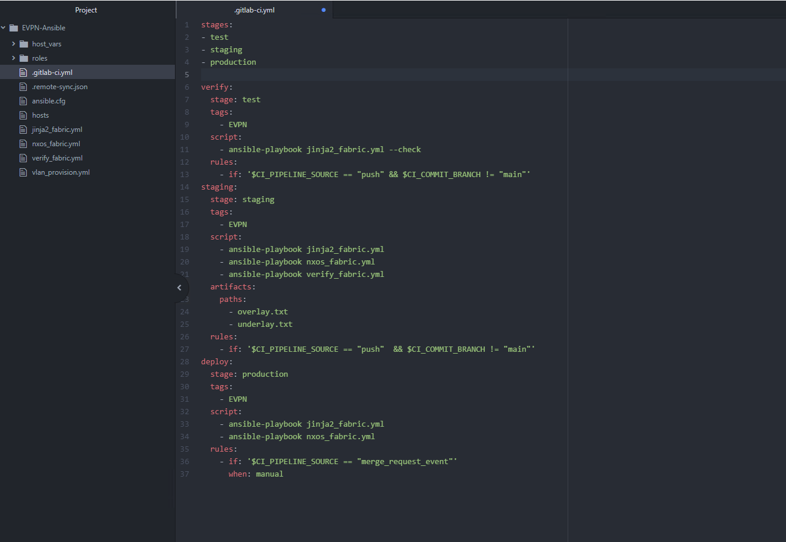
- From Atom, go to File > Save to push the new pipeline to Ansible node
Note, in the above pipeline file, you have configured
-
Three stages for pipeline named test, staging and production
-
In test stage, pipeline will do dry-run for the ansible playbook using a git-runner with tag EVPN. This script will be triggered by change in branch
-
In staging stage, pipeline will run playbooks to build EVPN fabric for new VNIs, also collrect show outputs files for manual verification. This scripts will be triggered after success of test stage.
-
In production stage, pipeline will run playbook to deploy EVPN fabric for new VNIs in production. This script will be triggered after merge to main branch with manual trigger.
Continuing the lab steps next:
- Switch to Ansible node (via MTPuTTY), add the
.gitlab-ci.ymlfile to staging area, and then commit & push the file to remote repository (on GitLab) as shown below. When prompted for credentials, enter the Username:lab.ciscolivePassword:#####for GitLab access:
git add .gitlab-ci.yml
git commit -m "add ci file"
git push origin main
Below screenshot shows the outputs of the commands (note your git repository will be based upon your respective Pod_{ID}):
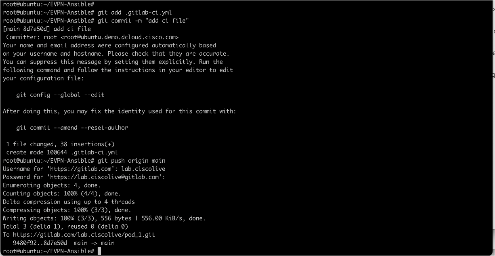
Step 5: Register local gitlab-runner
In this task, you will create local gitlab runner to run pipeline jobs. You will assign EVPN as tag of the runner and register it to your project.
- Switch to Chrome brower with gitlab project page. From the navigation menu on the left side, Select Settings > CI/CD. Then on the right pane for the Runners, click on Expand setting as shown in below screenshot.
Note
Screenshot below uses POD 1 as example, find your assigned POD ID from table in task1.
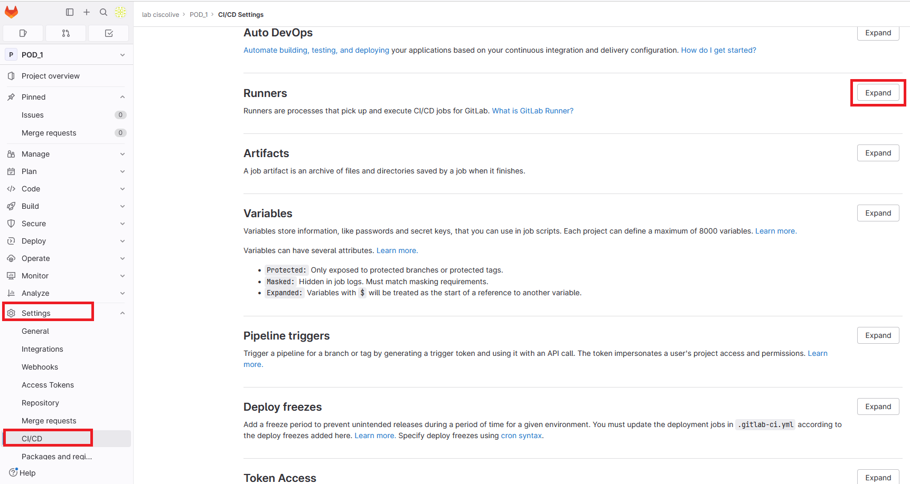
- As shown in below screenshot: under the Specific runners, note down the URL of
Register the runner with this URL, and theRegistration token. Both of these will be used on next step. Further, under Shared runners, click the toggle switch namedEnable shared runners for this project"to disable the shared runners for this project. Below screenshot shows the output once sharing has been disabled.
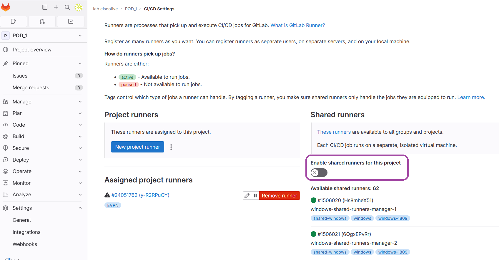
- On the Ansible node (in MTputty SSH session), register the GitLab runner by issuing the below command. Further, when prompted provide the runner registration info as shown below:
gitlab-runner register
Enter the GitLab instance URL: https://gitlab.com/
Enter the registration token: get registration token from previous step
Enter a description for the runner: enter without change
Enter tags for the runner (comma-separated): EVPN (case sensitive)
Enter optional maintenance note for the runner: enter without change
Enter an executor: shell
Below screenshot shows the outputs of the commands:

- On the Ansible node (in MTputty SSH session), run command the below command to start & check status of runner:
gitlab-runner start
gitlab-runner status
Below screenshots shown the output of above commands
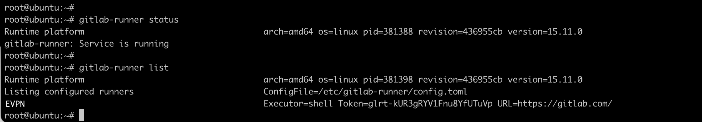
Step 6: Add stage branch and add new VNIs
In this task, you will modify the variable file to add new networks on EVPN fabric. Instead of applying the change directly to production, you will use the gitlab pipeline to do test and staging first. In order to do that, you will create new branch in your project and push the variable files to the new branch. The push will trigger gitlab-runner to execute scripts configured in pipleline file.
- Switch to "Atom", Under EVPN-Ansible, scroll to roles > jinja2_leaf > vars and open "main.yml" file. Enter following new VNI information under the existing L2VNI list as shown in the below screenshot:
- { vlan_id: 200, vni: 50200, ip_add: 172.21.200.1, mask: 24, vlan_name: L2-VNI-200-Tenant1, mcast: 239.0.0.200 }
- { vlan_id: 201, vni: 50201, ip_add: 172.21.201.1, mask: 24, vlan_name: L2-VNI-201-Tenant1, mcast: 239.0.0.201 }
Note
YAML is case and indentation sensitive, so the above vars/content must be properly added to existing file (Starting from column number 3).
Below screenshot shows the file after addition of above contents on Atom:
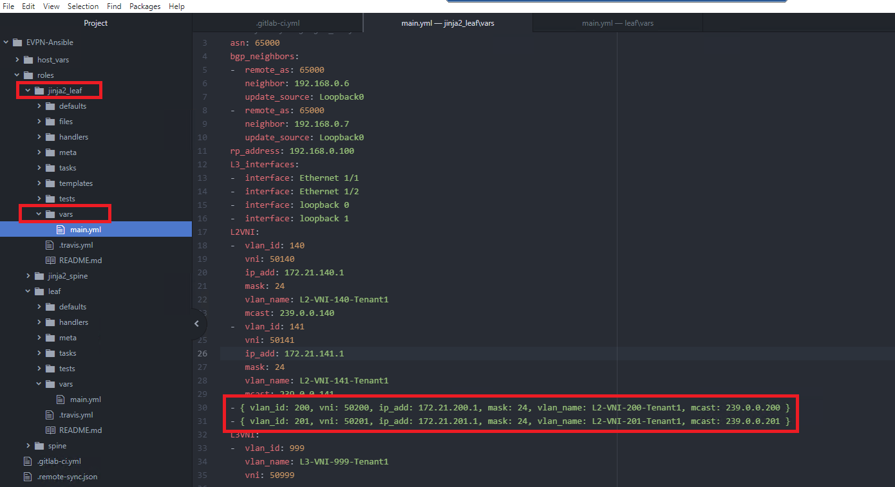
-
From Atom, go to File > Save to push the new jinja2 varilabe file to Ansible node.
-
Next, the variables will be added to Leaf role. From "Atom", open "main.yml" file under roles > leaf > vars. Enter following new VNI informtion under L2VNI as shown below
- { vlan_id: 200, vni: 50200, ip_add: 172.21.200.1, mask: 24, vlan_name: L2-VNI-200-Tenant1, mcast: 239.0.0.200 }
- { vlan_id: 201, vni: 50201, ip_add: 172.21.201.1, mask: 24, vlan_name: L2-VNI-201-Tenant1, mcast: 239.0.0.201 }
Note
YAML is case and indentation sensitive, so the above vars/content must be properly added to existing file (Starting from column number 3). Below screenshot shows the file after added above contents on Atom.
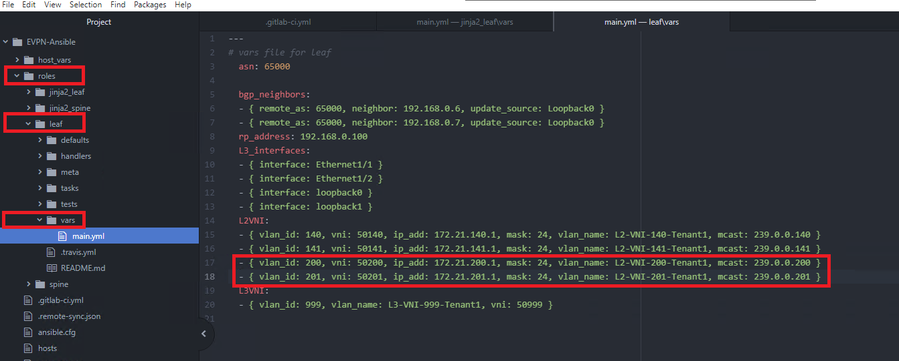
-
From Atom, go to File > Save to push the new leaf variable file to Ansible node
-
On the Ansible node (in MTputty SSH session), change directory to EVPN-Ansible project folder
cd ~/EVPN-Ansible
- Run the following git commands to create new branch newvni,
committhe updated variable files to that new branch andpushto Gitlab project:
git branch -m newvni
git add .
git commit -m "newvni"
git push -f origin newvni
When prompted, Use username: of lab.ciscolive and password: ##### for gitlab access

Step 7: Review pipeline testing and staging results
In this task, you will review the script results from pipeline. The git push command in previous task triggered pipeline test and staging stage.
- Switch to Chrome brower with GitLab project page. On the navigation menu on left side, select CI/CD > Pipelines as shown below:
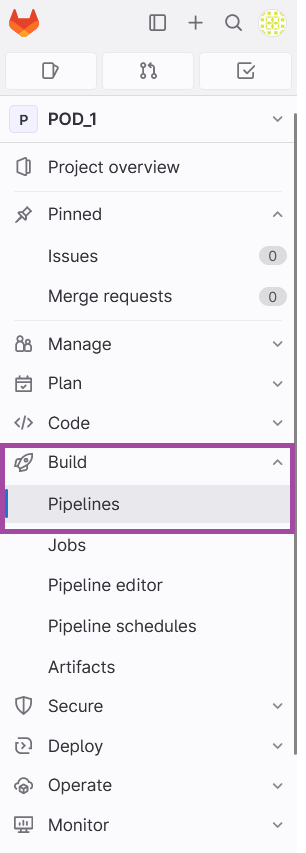
- Wait for the jobs finish, you can also access the runner console by clicking the pipeline stage under Stages and view the Job details as shown below:
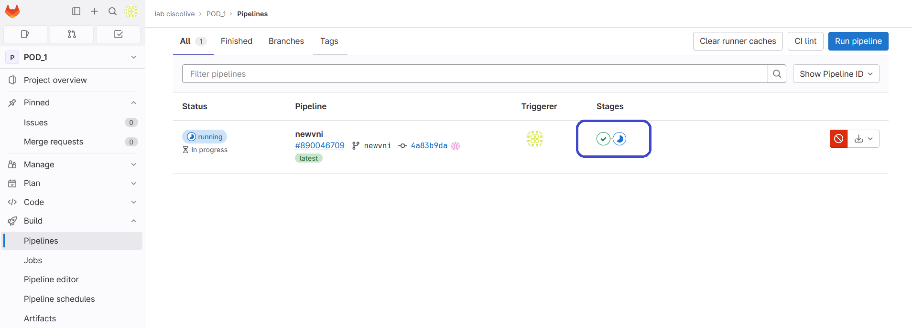
- After both pipeline stags are passed, you can verify the staging result from the stage artifacts. Click the the three vertical dots (...) on the right most of the
pipelineand Download artifacts as shown below.
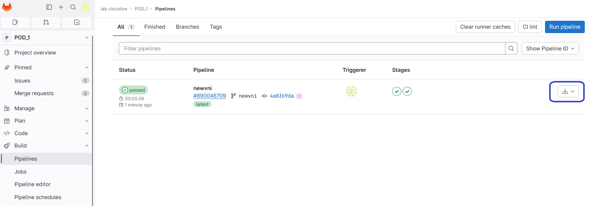
-
Unzip the downloaded artifacts.zip on your remote desktop, and you will see overlay.txt and underlay.txt files - these are the outputs from the ansible playbook.
-
Review the overlay show outputs and you can see new vni 50200 and 50201 are deployed on staging environment as shown below:
- - 'Codes: CP - Control Plane DP - Data Plane '
- ' UC - Unconfigured SA - Suppress ARP '
- ' SU - Suppress Unknown Unicast'
- ' '
- Interface VNI Multicast-group State Mode Type [BD/VRF] Flags
- '--------- -------- ----------------- ----- ---- ------------------ -----'
- 'nve1 50140 239.0.0.140 Up CP L2 [140] '
- 'nve1 50141 239.0.0.141 Up CP L2 [141] '
- 'nve1 50200 239.0.0.200 Up CP L2 [200] '
- 'nve1 50201 239.0.0.201 Up CP L2 [201] '
- nve1 50999 n/a Up CP L3 [Tenant-1]
- - ''
- - IP Route Table for VRF "Tenant-1"
- '''*'' denotes best ucast next-hop'
- '''**'' denotes best mcast next-hop'
- '''[x/y]'' denotes [preference/metric]'
- '''%<string>'' in via output denotes VRF <string>'
- ''
- '172.21.140.0/24, ubest/mbest: 1/0, attached'
- ' *via 172.21.140.1, Vlan140, [0/0], 17:56:06, direct'
- '172.21.140.1/32, ubest/mbest: 1/0, attached'
- ' *via 172.21.140.1, Vlan140, [0/0], 17:56:06, local'
- '172.21.141.0/24, ubest/mbest: 1/0, attached'
- ' *via 172.21.141.1, Vlan141, [0/0], 17:56:05, direct'
- '172.21.141.1/32, ubest/mbest: 1/0, attached'
- ' *via 172.21.141.1, Vlan141, [0/0], 17:56:05, local'
- '172.21.200.0/24, ubest/mbest: 1/0, attached'
- ' *via 172.21.200.1, Vlan200, [0/0], 17:56:04, direct'
- '172.21.200.1/32, ubest/mbest: 1/0, attached'
- ' *via 172.21.200.1, Vlan200, [0/0], 17:56:04, local'
- '172.21.201.0/24, ubest/mbest: 1/0, attached'
- ' *via 172.21.201.1, Vlan201, [0/0], 17:56:04, direct'
- '172.21.201.1/32, ubest/mbest: 1/0, attached'
- ' *via 172.21.201.1, Vlan201, [0/0], 17:56:04, local'
- - ''
- - 'Flags -(Rmac):Router MAC (Stt):Static (L):Local (R):Remote (V):vPC link '
- (Dup):Duplicate (Spl):Split (Rcv):Recv(D):Del Pending (S):Stale (C):Clear
- '(Ps):Peer Sync (Ro):Re-Originated '
- 'Topology Mac Address Prod Flags Seq No Host IP Next-Hops '
- '----------- -------------- ------ ---------- --------------- ---------------'
Step 8: Merge to main branch
After reviewing the test result from staging environment, you confirmed the new NVIs are deployed properly, you will merge the newvni branch to main branch and deploy the new VNIs on production environment.
Typically in real world there will (should!) be separate environments for staging and production. In this lab, we are using same inventory for staging and production environments for simplicity purposes. So once the merge is done then the changes can be rolled out to production (by applying ansible playbooks)
- Switch to Chrome browser with gitlab project page for your respective
pod_{ID}repository. Select Merge requests from navigation menu on the left, and select New merge request as shown below.

- Under the
Source branchsection, from theSelect source branchdrop down menu select newvni branch. Further, on theTarget branchsection, underSelect target branchdrop down menu make sure that main branch is selected as shown in the screenshot below.
Note
Below screenshot uses POD 1 as example, you must use your assigned POD ID from table in task1.

-
Next, click Compare branches and continue on the above page
-
On the next page, give a Title for the merge request as newvni Pod_
#(replace#with your respective Pod ID), leave everything else as default and click Create merge request -
On the merge request, un-check the Delete source branch after merge option. You may add Edit merger commit message. And after you have reviewed the merge request, click the Merge button as shown in the screenshot below:
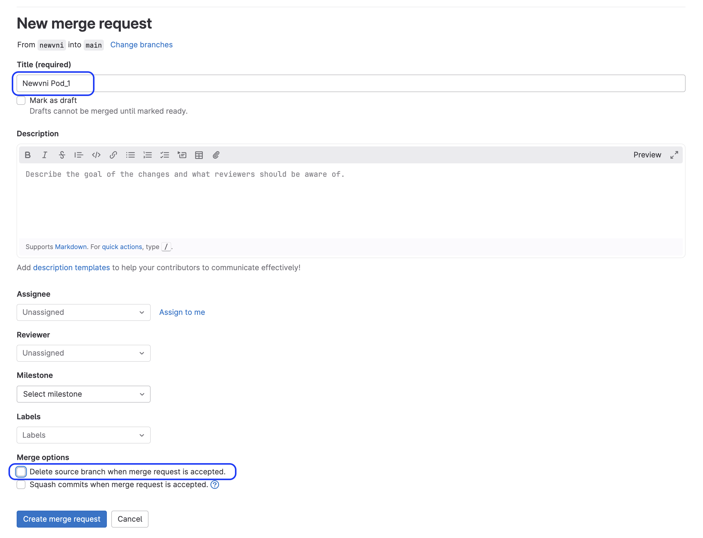
-
As per the CI pipeline file (named: .gitlab-ci.yml ) the
ruleswas configured for manual trigger for production deployment, hence the job for deploying production will not be triggered automatically. Instead, you will manually kickoff the production deployment job on pipeline. -
Switch to Chrome brower with gitlab project page, select CI/CD > Pipelines from navigation menu on the left
-
Deploy the newvni on production enviroment by selecting deploy on the pipeline job from previous merger request as shown in the screenshot below:
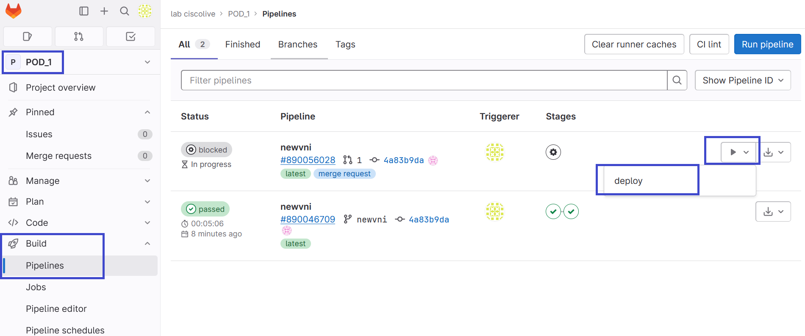
- Wait for the job finish, you can also access the runner console by clicking the pipeline stage under Stages as shown below:
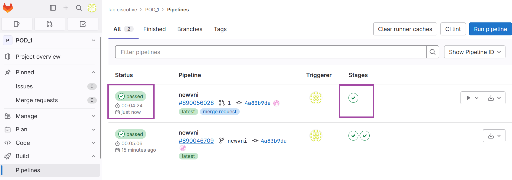